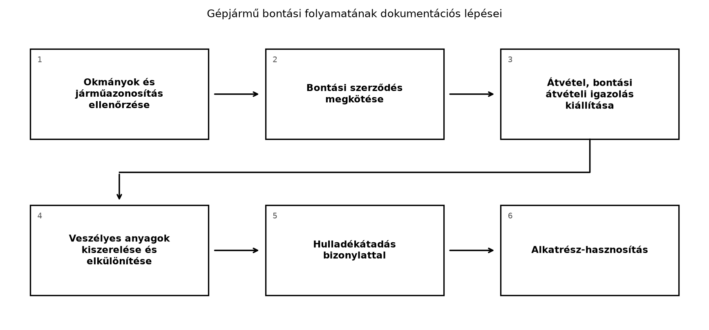

A javítóműhelyi munka akkor is komoly felelősség, ha éppen nem csavart húzunk meg, hanem dokumentumot töltünk ki. Egy sérült autó kárfelvétele, egy használtautó-átadás vagy egy kiöregedett jármű bontásba adása során ugyanúgy a szakmai pontosság, az ellenőrizhetőség és a jogkövető magatartás dönti el, hogy az ügyfél védve van-e, a szerviz pedig elkerüli-e a vitát. Ez az alfejezet a kárfelvétel, az értékesítési dokumentáció és a gépjárműbontás adminisztrációját mutatja be, szorosan építve a Járműazonosítás, adatbázisok, javítási utasítások és kapcsolási rajzok alfejezetben tanult azonosítási rendre, és a Veszélyes anyagok, hulladékok és környezetvédelem a műhelyben alfejezetben megismert anyagkezelési szabályokra.
A gépjármű bontásba adása nem egyszerű „leadom a roncsot” esemény, hanem többlépéses okmányolási és anyagkezelési folyamat. Az alábbi folyamatábra a fő állomásokat szemlélteti.

A folyamat minden eleme dokumentációhoz kötött: ha egy lépés igazolása hiányzik, a jármű később sem a forgalomból történő kivonásnál, sem a hulladékelszámolásnál nem kezelhető szabályosan. A következő szakaszok ezt a láncot bontják ki.
Definíció. Kárfelvételi jegyzőkönyv. A sérült jármű állapotának, a sérülések helyének és mértékének, valamint a javításhoz szükséges munkák és alkatrészek rögzítése. Célja, hogy a biztosító, a műhely és az ügyfél számára azonos alapot adjon a kárrendezéshez.
Definíció. Kárkalkuláció. A szükséges alkatrészek, munkadíjak, fényezési és anyagköltségek előzetes vagy utólagos számszerű összegzése. A gyakorlatban célszoftverrel, például gyári adatbázisra épülő kalkulációs rendszerrel készül (ilyen típust említhetünk „Audatex jellegű rendszerként”), de a lényeg a tételes, ellenőrizhető összegzés.
Definíció. Használtjármű-állapotlap. Az eladó és a vevő által is áttekinthető dokumentum, amely rögzíti a jármű fő azonosító adatait, futott kilométerét, műszaki állapotát, ismert hiányosságait, javítási nyomait és a legfontosabb karbantartási pontokat. Célja, hogy az értékesítéskor a jármű állapota utólag is igazolható legyen.
Definíció. Bontási átvételi igazolás. Olyan bizonylat, amelyet arra feljogosított gépjárműbontó állít ki a jármű végleges bontásba adásáról. Az ügyfél ezzel kezdeményezheti a jármű forgalomból történő kivonását. (ellenőrizendő: a hatályos megnevezés és a kiállítás pontos feltételei).
Összefüggés. A kárkalkuláció alapképlete:
ahol a kalkulált kárösszeg (Ft), az alkatrészköltség, a mechanikai és karosszéria-munkadíj, a fényezés (munkadíj és fényezőanyag), az egyéb anyagok és hulladékkezelési díj. Az áfát a hatályos adójogszabályok szerint külön kell felszámítani (ellenőrizendő: az aktuális áfakulcs).
A műhelyben a kárfelvétel általában a biztosítási bejelentéssel vagy az ügyfél javítási megbízásával kezdődik. A szerelő feladata, hogy a sérült járművet pontosan azonosítsa (alvázszám, motorszám, futott kilométer, felszereltség), majd a sérüléseket tételesen rögzítse. A jó kárfelvétel nem csupán annyit mond, hogy „megsérült a bal első ajtó”, hanem megadja a deformáció irányát, a festék- és lakksérülések mértékét, a rejtett csatlakozó elemek állapotát, és azt, hogy biztonsági rendszerek (légzsák, övfeszítő) érintettek-e.
A kárkalkuláció elkészítésekor az alábbi elvet érdemes követni:
Példa. Egy hátsó sérülést szenvedett járműnél a becsült alkatrészköltség , a mechanikai és karosszéria-munkadíj , a fényezés (munkadíj és fényezőanyag) , az egyéb anyag és hulladékkezelési díj . A kalkulált kárösszeg:
Az ellenőrzés itt azt jelenti, hogy a kalkuláció tételei megegyeznek-e a kárfelvételi jegyzőkönyvvel, és az árak–munkaidők a kalkulációs adatbázis szerint indokolhatók-e.
A használtautó-átadás során a legfontosabb, hogy a vevő a jármű állapotáról reális, utólag is ellenőrizhető képet kapjon. Az állapotlap nem minőségi tanúsítvány, hanem tényszerű állapotrögzítés. A hiányosság elhallgatása nemcsak fogyasztóvédelmi vitához, hanem kártérítési felelősséghez is vezethet; ezért a műhelyben a becsületes, aláírt állapotlap jobban védi az eladót is, mint egy szóbeli ígéret.
Szabály. A használt jármű állapotlapját mindig az eladás előtt, megvilágított, tiszta járművön, lehetőleg emelőn vagy vizsgálóárokban kell felvenni. A bejegyzéseket a jármű tényleges állapotának megfelelően, rövid és érthető formában kell megadni, és a vevőnek aláírás előtt be kell mutatni.
Az állapotlap tipikus rovatai:
| Rovat | Példa bejegyzés |
|---|---|
| Alvázszám, motorszám | egyezik az okmányokkal |
| Futott kilométer | 142 300 km (ellenőrizendő: a műszeregység szerint) |
| Gumiabroncsok | 205/55 R16 91V; elöl 5 mm, hátul 6 mm futófelület-mélység |
| Fékrendszer | tárcsák és betétek elöl 40%-os kopás, hátul 60%-os |
| Karosszéria | bal hátsó sárvédőn korábbi javítás nyoma |
| Olajszint és szervizállapot | motorolaj szint jó, a szervizperiódus 15 000 km vagy 12 hónap |
| Diagnosztika | EOBD-hibakód nincs, readiness-vizsgálat rendben |
Az értékesítési érték becslésére a műhely gyakran használ érték-katalógus típusú adatbázist (ilyen típust említhetünk „Eurotax jellegű rendszerként”), amely a jármű korát, futásteljesítményét, felszereltségét és állapotát figyelembe véve ad irányárat. Ez azonban nem helyettesíti a valós műszaki állapotfelmérést.
Előírás. A használt jármű értékesítésekor a fogyasztóvédelmi előírások szerint nem lehet megtéveszteni a vevőt, és a jármű lényeges tulajdonságait a valóságnak megfelelően kell közölni. A jármű életkorának, futásteljesítményének, műszaki állapotának és korábbi sérüléseinek elhallgatása vagy manipulálása jogellenes (ellenőrizendő: a hatályos fogyasztóvédelmi jogszabályok és a Ptk. vonatkozó szakaszai). A kilométeróra-állás manipulálása, a kibocsátásvédelmi rendszer eltávolítása vagy a sérült jármű állapotlap nélküli értékesítése ugyancsak jogellenes.
A gépjármű bontásba adása csak akkor szabályos, ha a bontó meggyőződött a jármű azonosságáról és a bontásra jogosult személyéről. A bontó nem fogadhat be olyan járművet, amelynek az okmányai hiányosak, vagy amelynek az alvázszáma, motorszáma nem egyezik a forgalmi okmányokkal.
Előírás. A bontás szabályozási alapja uniós szinten a hulladékká vált járművekről szóló irányelv (2000/53/EK – ellenőrizendő: hatályos állapot, az ELV-szabályozás felülvizsgálat alatt áll, új uniós rendelet léphet a helyébe), hazai szinten a hulladékról szóló törvény és a hulladékká vált gépjárművekről szóló kormányrendelet (ellenőrizendő: a pontos rendeletszám és a hatályos szöveg); az átvételi igazolás, a kiszerelési kötelezettségek és a hasznosítási arányok innen erednek. A gépjármű végleges bontásba adása hulladékgazdálkodási engedéllyel rendelkező bontóban történhet. A bontó köteles a jármű azonosságát ellenőrizni, bontási szerződést kötni, és a jármű átvételekor bontási átvételi igazolást kiállítani (ellenőrizendő: a hulladékká vált gépjárművekről szóló kormányrendelet), amellyel a tulajdonos a forgalmi engedély és a rendszám leadásával kezdeményezheti a jármű forgalomból történő kivonását (ellenőrizendő: a hatályos eljárás és okmánymegnevezések, a pontos formanyomtatványok). A bontás során veszélyes hulladék keletkezik, amelyre a hulladékgazdálkodási jogszabályok és a veszélyes hulladékra vonatkozó előírások érvényesek (ellenőrizendő: a hatályos jogszabályszámok, például a hulladékról szóló törvény és a végrehajtási rendeletek).
A bontási átvételi igazolás az a dokumentum, amely igazolja, hogy a járművet a bontó átvette, és az már nem kerül közúti forgalomba. Az ügyfél ezzel tudja a járművet a hatóságnál kivonatni. Az igazolást csak a bontási szerződés és a járműazonosítás elvégzése után szabad kiadni.
Eljárás. A gépjármű bontási átvételének okmányellenőrzése és adminisztrációja:
A bontási szerződésben rögzíteni kell, hogy a járművet a tulajdonos végleges bontásra adja át, és a bontó jogosult a veszélyes anyagok eltávolítására. A szerződés nélküli bontás jogvitát okozhat, ezért a műhelyben ezt a lépést soha ne hagyjuk el.
A bontott járműben lévő folyadékok és anyagok a Veszélyes anyagok, hulladékok és környezetvédelem a műhelyben alfejezetben tanult módon kezelendők. A bontóban ezen anyagok eltávolítása nem opcionális, hanem a hulladékgazdálkodási engedély feltétele.
Környezetvédelem. A gépjárműbontás során kiszerelt üzemanyag, motorolaj, hajtóműolaj, fékfolyadék, hűtőfolyadék, akkumulátorsav, klímaközeg és AdBlue veszélyes hulladék. Ezeket nem szabad a talajba, csatornába vagy a kommunális hulladékba engedni. A bontó köteles gyűjtőedényeket és kármentő tálcákat használni, a folyadékokat fajtánként elkülönítve tárolni, és csak hulladékgazdálkodási engedéllyel rendelkező átvevőnek átadni, a nyilvántartást vezetve (ellenőrizendő: a hatályos hulladékgazdálkodási előírások). A klímahűtőközeget F-gáz képesítéssel rendelkező személynek kell lefejtenie; légkörbe engedése tilos. A légzsák- és övfeszítő egységeket a gyártói előírás szerint kell kiépíteni vagy a bontóban kezelni, mert pirotechnikai anyagot tartalmaznak (ellenőrizendő: a gyártói előírás szerint).
Biztonsági korlát. Az üzemanyag leszívása tűz- és robbanásveszélyes: nyílt láng, szikra és dohányzás tilos, a leszívást földelt, zárt gyűjtőrendszerrel és jó szellőzés vagy elszívás mellett végezzük, a gyűjtőedény mellett poroltót tartunk. A légzsák- és övfeszítő egységek (pirotechnika) kiszerelése csak a gyártói várakozási idő és eljárás szerint, akkumulátor-lekötés után történhet (ellenőrizendő: gyártói adat); hibrid vagy elektromos jármű HV-rendszerét csak feszültségmentesítés és a feszültségmentesség ellenőrzése után, arra képesített személy bonthatja.
A hulladékátadást bizonylattal kell dokumentálni. A bontónak a veszélyes hulladék nyilvántartásában fel kell tüntetnie az anyag fajtáját, mennyiségét, az átvevő nevét és az átadás időpontját. Ennek a papírnak akkor is meg kell lennie, ha az anyagot később hasznosítják, például az akkumulátort újrahasznosításra adják át.
A bontás során nem minden alkatrész lesz automatikusan hulladék. A használható motor, váltó, ajtó, lámpa, ülés, futóműelem és más fődarab értékesíthető vagy újra felhasználható, ha a bontó az alkatrészt megvizsgálta, és annak műszaki állapotát, származását dokumentálta. A biztonsági szempontból kritikus alkatrészek – fék, kormány, futómű, légzsák – csak akkor hozhatók forgalomba, ha a bontó ezeket a gyártói előírás vagy az arra vonatkozó szabályzat szerint ellenőrizte, és a bizonylaton feltüntette a jármű azonosítóját (ellenőrizendő: a használt alkatrészek forgalmazásának szabályai). A gumiabroncsokat azok állapota és kopása szerint kell osztályozni; a nem megfelelő abroncsot hulladékként kell kezelni.
Minőségellenőrzés. Az adminisztrációt ugyanúgy ellenőrizni kell, mint egy beállítási értéket. A fő ellenőrzési pontok:
Valós életbeli alkalmazás. Ügyfél érkezik egy törött autóval, amelyet biztosítási kárra szeretne javíttatni. A műhely azonosítja a járművet, kárfelvételi jegyzőkönyvet vesz fel, fotókat készít, és a gyári adatbázis alapján kárkalkulációt készít. A kalkulációból kiderül, hogy az összkár meghaladja a jármű gazdasági javíthatóságát, ezért az ügyfél a bontás mellett dönt. A bontó ellenőrzi az okmányokat, megköti a bontási szerződést, eltávolítja a veszélyes anyagokat, bontási átvételi igazolást ad ki, és az ügyfél a hatóságnál kivonatja a járművet. A folyamat minden lépése dokumentálva van; ha később az ügyfél reklamál, a papírok megvédik a bontót.
Hiba. A műhely kitölt egy állapotlapot, de a futott kilométert kerekítve, pontatlanul rögzíti. Következmény. A vevő később csalásra hivatkozhat, mert az adat nem felel meg a valóságnak. Helyes gyakorlat. A kilométeróra állását pontosan rögzíteni kell, és ha az óra állása kérdéses, azt is fel kell tüntetni.
Hiba. A bontó nem végzi el a légzsák és az övfeszítő szabályos kiépítését, hanem a járművet a pirotechnikai egységekkel együtt préseli. Következmény. Súlyos baleset, tűz vagy jogi felelősség. Helyes gyakorlat. A pirotechnikai alkatrészeket a gyártói előírás szerint kell eltávolítani és külön kezelni; a ki nem oldott egységet veszélyes anyagként kell tárolni.
Hiba. A bontó a fékfolyadékot a használt olajjal egy edénybe önti. Következmény. A keveredés miatt a hulladék nem hasznosítható megfelelően, és a nyilvántartás sem felel meg a valóságnak. Helyes gyakorlat. A folyadékokat fajtánként elkülönítve, feliratozott edényben kell gyűjteni, ahogyan az a Veszélyes anyagok, hulladékok és környezetvédelem a műhelyben alfejezetben szerepel.
Hiba. A használtautó-értékesítő a jármű ismert sérülését nem tünteti fel az állapotlapon, mert szerinte „úgyis kiderül”. Következmény. A vevő megtévesztése miatt az eladó kártérítési felelősséggel tartozhat. Helyes gyakorlat. Minden ismert sérülést, javítást fel kell tüntetni; a nyilatkozat aláírásával az eladó is védi magát.
Továbbvitt eredmény. Az itt tanult dokumentációs fegyelem – azonosítás, tételes rögzítés, aláírt nyilatkozat, bontási igazolás – a Vizsgafelkészülés gyakorlati feladataiban jelenik meg, amikor a vizsgázónak egy használtautó-állapotlapot kell kitöltenie, vagy egy bontási folyamat okmányait kell sorrendbe raknia.
1. feladat (A). Definiáld a kárkalkuláció fogalmát, és írd fel az összegzési képletét!
2. feladat (A). Egy jármű kárfelvételénél az alkatrészköltség 42 500 Ft, a munkadíj 58 000 Ft, a fényezési munka 95 000 Ft, az egyéb anyagok és hulladékkezelés 7 800 Ft. Számítsd ki a kalkulált kárösszeget, és ellenőrizd az eredményt!
3. feladat (B). Rendezd sorba a bontási átvétel lépéseit: (a) bontási szerződés megkötése, (b) járműazonosítás, (c) veszélyes anyagok eltávolítása, (d) bontási átvételi igazolás kiállítása, (e) hulladékátadási bizonylat kiállítása. Indokold a sorrendet!
4. feladat (B). Tölts ki egy használtautó-állapotlapot egy kitalált, 2018-as benzinüzemű autóra. Legalább nyolc rovatot adj meg, köztük a gumiabroncsok, a fékrendszer és a diagnosztika állapotát. Az adatokat reálisan vetted fel?
5. feladat (C). Mi a szakmai probléma azzal, ha egy bontó a fékfolyadékot és a motorolajat azonos tárolóedénybe önti, majd a nyilvántartásban csak „fáradtolaj” megnevezést szerepeltet? Milyen következményei lehetnek?
6. feladat (D). Egy ügyfél használtautó-értékesítés előtt azt kéri, hogy a műhely az állapotlapot ne dokumentálja, mert a vevő úgyis megveszi az autót. Hogyan járj el? Fogalmazd meg röviden, milyen jogi és szakmai érvekkel győznéd meg az ügyfelet a pontos állapotlap fontosságáról!
Önellenőrzés – válaszok:
1. feladat (A). A kárkalkuláció a javításhoz szükséges alkatrészek, munkadíjak, fényezési munkák és egyéb anyagok tételesen összegzett költségbecslése. Képlete: , ahol alkatrész, munkadíj, fényezés, egyéb anyag és hulladékkezelési díj.
2. feladat (A). Adott: , , , . Keresett: . Képlet: . Behelyettesítés: . Ellenőrzés: az összeg reális, az egyes tételek pozitívak, a végeredmény nagyobb minden tételnél.
3. feladat (B). Helyes sorrend: (b) járműazonosítás, (a) bontási szerződés, (d) bontási átvételi igazolás kiállítása, (c) veszélyes anyagok eltávolítása, (e) hulladékátadási bizonylat. Indoklás: először az azonosságot és a tulajdonjogot kell tisztázni, utána a szerződést megkötni; a bontó a jármű átvételekor kiállítja az átvételi igazolást, amellyel az ügyfél a forgalomból kivonást kezdeményezheti; ezután következik az anyagok eltávolítása és a hulladékátadás bizonylatolása (ellenőrizendő: a hulladékká vált gépjárművekről szóló kormányrendelet).
4. feladat (B). A válasz egyéni, de például:
Az adatok fiktívek, de reálisak.
5. feladat (C). A fékfolyadék glikol-alapú veszélyes hulladék, a motorolaj szénhidrogén-alapú olaj. Az összekeverésük miatt a hulladék nem hasznosítható megfelelően, és a nyilvántartás sem fedi a valóságot. Ez hulladékgazdálkodási szabálysértés, a bontó engedélyét veszélyezteti, és környezeti kockázatot is jelent. Helyes gyakorlat: fajtánként elkülönített, feliratozott edényekben gyűjteni, és a hulladékátadást pontosan bizonylatolni.
6. feladat (D). Meg kell magyarázni az ügyfélnek, hogy a pontos állapotlap nem a vásárlás meghiúsítását, hanem a későbbi viták megelőzését szolgálja. Ha az ügyfél elhallgat egy ismert hibát, az a fogyasztóvédelmi előírások és a polgári jogi felelősség szerint jogellenes lehet (ellenőrizendő: a hatályos fogyasztóvédelmi törvény és a Ptk. rendelkezései). A műhelynek a szakmai és jogi elvek szerint kell eljárnia, és a dokumentált állapotlapot az ügyfélnek aláírásra bemutatnia. Ha az ügyfél ezt megtagadja, a műhelynek meg kell fontolnia a munka elvállalását, vagy legalább írásban rögzítenie kell az elutasítást.
A kárfelvétel, az értékesítési dokumentáció és a gépjárműbontás közös alapelve a tételes, aláírt, ellenőrizhető adminisztráció. A kárkalkuláció képlete , ahol minden tétel a kárfelvételi jegyzőkönyvhöz és a gyártói adatbázis szerinti munkaidő- és alkatrészadatokhoz köthető. A használt járművek állapotlapja a valós állapot rögzítésére szolgál; a futott kilométer, a fék, a gumiabroncsok, a karosszéria és a diagnosztikai állapot pontatlansága fogyasztóvédelmi következményekkel járhat. A gépjárműbontás csak az okmányok és a tulajdonjog ellenőrzése után, bontási szerződéssel végezhető; a bontó bontási átvételi igazolást állít ki, amellyel az ügyfél a járművet forgalomból kivonatja (ellenőrizendő: a hatályos eljárás). A bontás során az üzemanyagot, olajokat, fék- és hűtőfolyadékot, akkumulátorsavat, klímaközeget és AdBlue-t fajtánként elkülönítve kell gyűjteni, dokumentálni, és csak engedéllyel rendelkező átvevőnek átadni. Továbbvitt eredmény. A dokumentációs fegyelmet és a bontási okmányok sorrendjét a Vizsgafelkészülés gyakorlati feladatai ellenőrzik, ezért az azonosítás–szerződés–anyagkezelés–igazolás láncot pontosan kell ismerni.
Forrástípusok. Magyar jogszabályok: a hulladékról szóló törvény és annak végrehajtási rendeletei; a fogyasztóvédelmi törvény és a polgári törvénykönyv szerződésszegésre vonatkozó részei; a gépjárműbontásra vonatkozó hulladékgazdálkodási előírások. Uniós háttér: a hulladékká vált járművekről szóló 2000/53/EK irányelv (ellenőrizendő: hatályos állapot és az új ELV-rendelet), a hulladékokra és az F-gázokra vonatkozó uniós rendeletek; hazai végrehajtás: a hulladékká vált gépjárművekről szóló kormányrendelet (ellenőrizendő: rendeletszám). Kalkulációs és értékbecslési adatbázisok: gyártói és katalógusjellegű, zárt adatbázisok (Audatex, Eurotax típusúak). Gyártói adatok: a veszélyes anyagok kiürítésére, a légzsák és övfeszítő kiépítésére vonatkozó bontási utasítások.
Ellenőrizendő állítások. A bontási átvételi igazolás megnevezése, formanyomtatványa és a kiállítás pontos feltételei; a forgalomból történő kivonás hatósági eljárása; a hulladékról szóló törvény és a végrehajtási rendeletek pontos jogszabályszámai és hatályos szövege; a fogyasztóvédelmi rendelkezések a használt jármű értékesítésére; a klímaközeg lefejtésére vonatkozó F-gáz képesítési követelmények; a légzsák- és övfeszítő egységek kezelésének előírásai; a gyártói munkaidő- és alkatrészadatok, valamint az áfakulcs aktuális értéke.